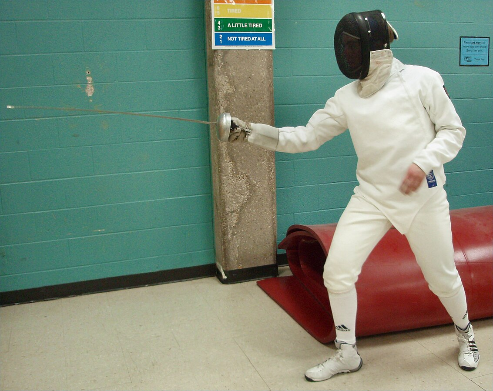
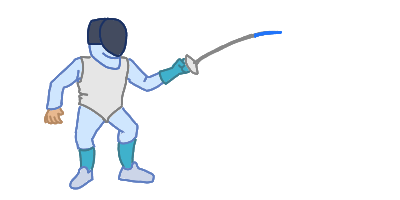
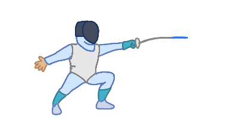

Techniques
In fencing, there are many different techniques that help you move down the strip, attack your opponenet, or defend yourself. Some of these techniques are used constantly in every style of fencing while others are used sparingly in just one discipline. This page will go over just a few of the most fundamental techniques: on guard, advancing, retreating, lunging, and parrying.
On Guard
On guard is the ready stance used before the bout begins.
First, you stand with your heels
together, but perpendicular. They should make an "L" shape with your dominant foot facing
toward your opponent. Next, step out with your front foot so your heels are shoulder width
apart. Then, bend your knees slightly. Your feet and legs are now in the correct position!
Now, your dominant arm should be slightly bent outward, facing your opponent. Your front elbow
should be about a fist away from your body. Your back arm needs to be behind your body as to
not block target area. There is no correct way to keep your back arm when fencing, just make sure
it is not in front of you and it's in a comfortable position.
Make sure while on guard that your back is straight and your weapon is aimed at your opponent.
On guard is used in fencing as it maintains balance and decreases the amount of target area.
Advance
The advance is the most basic forward movement a fencer makes. To advance, a fencer first stands in on guard position. Next, you raise your front toes and then step forward while landing on your heel. Once your heel hits the ground, the back leg can then move forward as well. The front foot's toes and the back foot should land on the ground at the same time.
Retreat
The retreat is the movement fencers make to go backwards. It is similar to the advance, but in the opposite direction. In on guard position, move the back foot backward first. You should land with the ball of your back foot first. Then, the front foot follows. The front foot and the heel of the back foot should land at the same time.
Lunge
Lunging is one of the most important ways to attack and gain distance in fencing. First, make sure you are in on guard position. Next, extend your arm outward. It's crucial that you extend your arm first as in foil and saber it establishes your right of way and it increases your accuracy. Then, lift your toes of your front foot, similar to the advance. Kick your front foot forward while pushing off with your back leg until it is straight. Finally, land with your front heel while extending your back arm to maintain balance. If you have lunged correctly, then your front knee will be directly over your front foot and your back leg will be fully extended.
Parry 4
A parry is a defensive action where a fencer blocks their opponent's attack. There are a couple of different types of parries, numbered one to eight, but the most commonly used one, especially in foil, is parry four. When your opponent extends their arm to attack, use the forte of the blade (the lower half) to firmly block the opponent's blade.
Try out some fencing moves!
 Controls:
"d" = advance, "a" = retreat, "w" = lunge
Comments & Quiz
Comments
Test your knowledge!
How many types of parries are there?
See average quiz results:
0%
0%